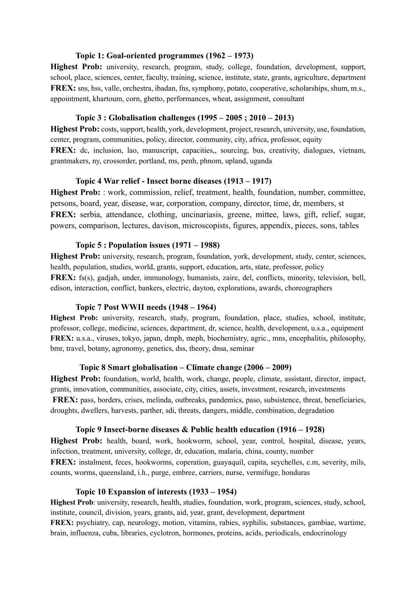
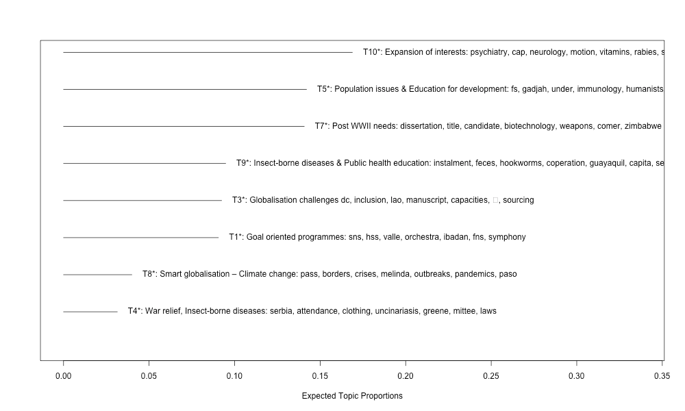
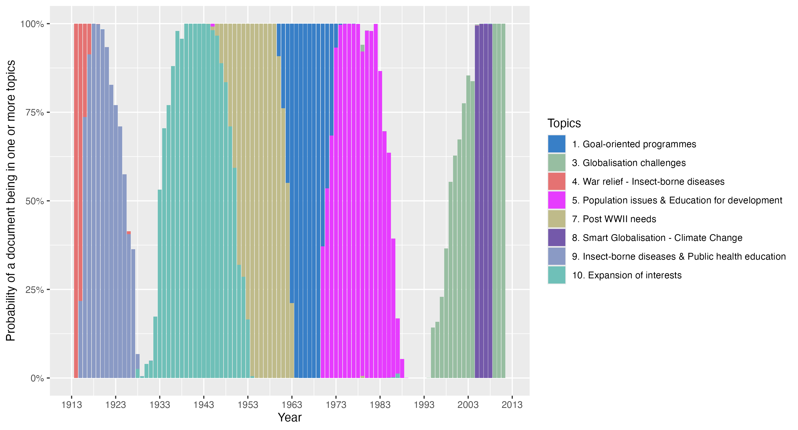

Develop Yourself! Development according to the Rockefeller Foundation (1913 – 2013)
Session 7B
Author
Affiliation
Iván Lorenci de Francisco
University of Geneva
Abstract
This paper aims to analyse the evolution of the development concept throughout the Rockefeller Foundation’s first century of existence, utilising its annual reports. Drawing inspiration from Moretti & Pestre’s influential working paper – Banskpeak – our methodology consists of a two-fold approach. Firstly, we conducted a quantitative language analysis of the language employed in the Rockefeller Foundation’s annual reports. Here, using R we did a Structural Topic Modelling. Secondly, building upon the outcomes of this initial quantitative analysis, we delved into the activities and institutions in which the Foundation was involved to reconstruct its evolving development concept. This approach allowed us to observe how the meaning of development evolved, accumulating new connotations over time.
We started our analysis at the beginning of the 20th century because – even though the development concept was not formally coined until 1949 – the Foundation was already involved in development activities and institutions before that date. Furthermore, this actor had a set of ideas from the beginning of its activities that continued to influence its actions even after the formalisation of the development concept. In this sense, we explored the significance of the self-help ethic and market-oriented mentality in other spheres of development.
Consequently, we demonstrated that self-help had consistently played a pivotal role in the Foundation’s development strategy since the Foundation’s inception. Furthermore, we scrutinised the roles ascribed by the Foundation to various actors in the development process. While the Foundation initially regarded the State as the primary actor in development, by the study period’s end, new participants such as private companies, communities, and individuals had become integral to this process. All the necessary data and scripts to reproduce this presentation can be found here.
Keywords
Digital History, Structural Topic Modelling, HCPC, Rockefeller Foundation, Development
Introduction
In our presentation, we will explore how Digital Humanities tools can be used to analyse the concept of development from a historiographical perspective. We will begin with a brief introduction to the topic, followed by an overview of our primary sources. The core of our presentation will focus on the methodology, where we will justify our choice of Structural Topic Modelling over other techniques like Hierarchical Clustering on Principal Components. Finally, we will present the results of our analysis and some remarks.
The concept of development — and its practical implications — has been controversial since its inception, both in academia and the political arena. Created in the post-WWII period as a universal goal, it soon met opposition, especially in ‘underdeveloped’ countries that had little say in the development policies imposed on them. Consequently, the concept has undergone continuous redefinition.(Sachs 2008)
From the outset, governmental and non-governmental actors have been involved in the development process. Among the non-state actors, philanthropic foundations are particularly significant. However, despite their importance, the way these foundations conceptualize development has received less academic attention than other aspects of their activities. This is true for the Rockefeller Foundation,1 a key player in international public health, (Birn and Fee 2013) global food and agriculture policies, (Smith 2009) the development of various academic disciplines, (Tournès 2007; Fisher 1983, 1999; Schneider and Picard 1999) and the configuration of the international order after WWII. (Tournès 2014)
Primary sources
We chose as primary sources the Foundation’s Annual Reports for two reasons. The first one is quantitative. The Annual Reports were published annually from 1915 to 2016, with the 1913 and 1914 reports issued jointly in 1915. With this extensive temporal coverage, the Foundation lends itself as an excellent observatory to study the evolution of the concept of development before and after the emergence of this concept.
The second reason is qualitative. The main objective of annual reports is to communicate the activities of the Foundation, its financial operations, its priorities, its vision of the issues it faces, and a self-assessment of its own actions in the past and those to be adopted in the future. Although the structure of the annual reports has changed over time, the content has remained stable. The Foundation presents with them a summary of its activities but also presents a narrative that seeks to communicate the reasoning and justification behind the Foundation’s activities. In this sense, the annual reports are a showcase in which the Foundation displays, promotes and justifies its values.
Moreover, since these reports are public, they serve two functions. The first is purely functional. The reports inform the reader of the Foundation’s activities, its financial state, and other relevant details. The second function is symbolic. As Peter Goldmark Jr. (president of the Foundation from 1988 to 1997) noted, philanthropic foundations lack the three disciplines American life has: the test of the markets, the test of the elections and the press that analyses every move. (Rockefeller Foundation 1998, 3) Therefore, the Foundation uses the annual reports as a form of self-evaluation, as a way to make itself accountable to the public and to offer a promotion and justification of the values that guide its activities. (Rockefeller Foundation 1955, 3)
Methodology and its twists and turns
Confronted with the enormous amount of reports to be analysed and inspired by the working paper “Bankspeak” by Moretti and Pestre, (Moretti and Pestre 2015) we undertook a quantitative analysis of the language used in this reports. Then, guided by the results of this analysis we interpreted the activities and institutions in which the Foundation was involved to reconstruct the evolution of its concept of development.
We began our quantitative analysis by importing the PDF reports into R using the ‘tidy’ principle (Silge and Robinson 2016, 1) and then performing the necessary text cleaning to reduce the size of the corpus. This increased the efficiency and effectiveness of the analysis.(Gurusamy and Kannan 2014) We then proceeded with the analysis itself.
Initially, we employed basic text analysis techniques, namely counting the most frequent words per year and per period and using the TF-IDF. These techniques yielded promising results but were insufficient. Although the Foundation had the same objective throughout the period – “to promote the well-being of mankind throughout the world” – ,(Rockefeller Foundation 1915, 7; 1964, 3; 2014, 3) it used different words in absolute and relative terms to describe and justify its activities.
However, in terms of visualisation, precision and displaying temporal dynamics, the capabilities of these two techniques are worse than those of Hierarchical Clustering on Principal Components (HCPC) and Structural Topic Modelling (STM). Moreover, the former techniques are unable to create clusters and topics, unlike the latter two.
We continued with the HCPC, using only nouns, as this part of speech is the most suitable for analysing topics.(Suh 2019, 2) This technique confirmed the findings of the absolute frequency analysis and the TF-IDF. That is, there is structure in the use of words by the Foundation, as reflected both in the biplot created by the Correspondence Analysis (CA) necessary to perform the HCPC and in the final clusters. In the biplot in Figure 1, the documents are organised in a temporal manner and, being together with each other, this indicates that they favour and avoid the same words regardless of the number of words in each document.(Bécue-Bertaut 2019, 18–19) Specifically, we observed that the Foundation used more frequently terms such as ‘infection’ or ‘hookworm’ and less frequently terms such as ‘resilience’ or ‘climate’ at the beginning of the period. Furthermore, when clustering after the CA and analysing the words contained in each cluster, it is observed that the Foundation, over time, diversifies the topics in which it engages, following a chronological trend. However, the visualisation of the clusters does not significantly enhance our understanding of the matter.
Figure 1: Top 25 contributors to the two first dimensions
Despite offering us greater certainty regarding the temporal structure of the language used, the HCPC does not possess the precision of the next technique we employed: the Structural Topic Modelling with temporal metadata. In a CA with two dimensions, the closer a word, report, or cluster is to the origin of coordinates, the lower its explanatory power, as it represents a smaller percentage of the variance. In our case, there is one cluster almost at the origin of coordinates and two others not far from the central values of one or the other dimension.
Next, we employed the STM using also only nouns. As a topic modelling technique, the STM seeks to discover latent topics assumed to be generated by the corpus to be analysed, and the researcher must define the number of topics. Since there is no ‘correct’ number of topics for a corpus, we followed Roberts et al.’s methodology.(2014) Thus, we quantitatively measured semantic coherence2 and topic exclusivity3 by standardising these scores and choosing a number of topics that balances them well.
Table 1: Table with the topical content

Once we chose the number of topics, we obtained two lists of nouns associated with each topic, as shown in Table 1. One list groups the nouns most likely to appear in each topic (Highest Prob list), while the other groups those that are frequent and exclusive (FREX list). These lists allow us to discover the central topics without our prior biases. We then named each topic using both lists and analysed the most representative reports for each topic. Therefore, this approach is a mixture of the methods suggested by Roberts et al.(2014, 1068) and Grajzl & Murrell.(2019, 10)

Figure 2: Topical prevalence of the topics correlated with time
Subsequently, we calculated the frequency of each topic in our corpus, as shown in Figure 2, and deduced the importance of each topic for the Foundation’s promotion of development.

Figure 3: Topics and their correlation with time metadata
Furthermore, by using STM with temporal metadata, we identified which topics the Foundation addressed in its annual reports and their statistical relation to time. This approach enabled us to observe how the frequency of particular topics changed over time. The distribution of these topics over time is illustrated in Figure 3.
Finally, using the Highest Prob and FREX lists Table 1, and the most prominent reports of each topic, we examined the activities and institutions in which the Foundation was involved to reconstruct the development concept and the ideas underpinning it.
Results and conclusion
This approach provided an innovative way to understand the main topics in which the Foundation was involved in its promotion of development. Despite having the ultimate goal “to promote well-being of mankind throughout the world”, before the coining of the concept of development, the Foundation was already engaged in activities later considered development-related. These activities were strongly influenced by the political, epistemic, and economic context. Thus, we observed how the first layer of meaning of development – health – was gradually joined by economic, social, cultural, and finally, environmental layers.
However, this methodology proved inefficient in analysing the role of the self-help mentality and the market-oriented mentality. To address this, we had to perform a close reading to conclude the centrality of both in the Foundation’s thinking, especially in the 21st century. Indeed, throughout its existence, the Foundation sought to ensure that the actors it helped to develop became autonomous agents who could solve their problems without recourse to third parties. Furthermore, we observed how the importance of these actors in the development process also changed over time. At the beginning of the period, the Foundation conceived of the State as the primary catalyst for development. By the end of the period, it advocated development involving the State, private enterprise, civil society, and individuals. As the State’s credibility as a guarantor of rights and provider of welfare-related services wanes, the Foundation encourages individuals to find their own means to cope with the risks present in contemporary society without waiting for help from the State.
This limitation of STM revealed the importance of working hypotheses created through a sound bibliographical review and the hermeneutical work of the historian, despite the use of new methodologies. It was only through the insights gained from the bibliographical review that we anticipated a change in the role of different political actors in the development arena and recognised the significance of the self-help and market-oriented mentality in the Foundation’s development concept. When interpreting the STM results, we found that we could not answer these questions solely with the digital tools. Consequently, we had to conduct a close reading to address these issues, highlighting the critical role of hermeneutical work both in analysing the results of Digital Humanities tools and in the close reading exercise.
Bécue-Bertaut, Monica. 2019. Textual Data Science with R. CRC Press.
Birn, Anne-Emanuelle, and Elizabeth Fee. 2013. “The RockefellerFoundation and the International Health Agenda.”The Lancet 381 (9878): 1618–19. https://doi.org/10.1016/S0140-6736(13)61013-2.
Fisher, Donald. 1983. “The Role of PhilanthropicFoundations in the Reproduction and Production of Hegemony: RockefellerFoundations and the SocialSciences.”Sociology 17 (2): 206–33. https://doi.org/10.1177/0038038583017002004.
———. 1999. “The RockfellerFoundation and the Development of ScientificMedicine in GreatBritain.”The Rockfeller Foundation and the Development of Scientific Medicine in Great Britain, 1000–1025.
Grajzl, Peter, and Peter Murrell. 2019. “Toward Understanding 17th Century English Culture: A Structural Topic Model of FrancisBacon’s Ideas.”Journal of Comparative Economics 47 (1): 111–35. https://doi.org/10.1016/j.jce.2018.10.004.
Gurusamy, Vairaprakash, and Subbu Kannan. 2014. Preprocessing Techniques for TextMining.
Moretti, Franco, and Dominique Pestre. 2015. “Bankspeak: The Language of WorldBank Reports.”New Left Review 92 (2): 75–99.
Roberts, Margaret E, Brandon M Stewart, Dustin Tingley, Christopher Lucas, Jetson Leder‐Luis, Shana Kushner Gadarian, Bethany Albertson, and David G Rand. 2014. “Structural Topic Models for Open‐ended Survey Responses.”American Journal of Political Science 58 (4): 1064–82.
Rockefeller Foundation. 1915. “Annual Report 1913-1914.” New York: The Rockefeller Foundation.
———. 1955. “Annual Report 1954.” New York: Rockefeller Foundation.
———. 1964. “Annual Report 1963.” New York: Rockefeller Foundation.
———. 1998. “Annual Report 1997.” New York: Rockefeller Foundation.
———. 2014. “Annual Report 2013.” New York: Rockefeller Foundation.
Sachs, Wolfgang. 2008. The Archaeology of the Development Idea. Earthcare Books Kolkata.
Schneider, William, and Jean-François Picard. 1999. “The Role of the RockefellerFoundation and the Development of Biomedical Research in Europe.” In Managing Medical Research in Europe: The Role of the RockefellerFoundation: 1920s-1950s. Clueb.
Silge, Julia, and David Robinson. 2016. “Tidytext: Text Mining and Analysis Using Tidy Data Principles in R.”Journal of Open Source Software 1 (3): 37.
Smith, Elta. 2009. “Imaginaries of Development: TheRockefellerFoundation and RiceResearch.”Science as Culture 18 (4): 461–82. https://doi.org/10.1080/09505430903186070.
Suh, Jong H. 2019. “SocialTERM-Extractor: Identifying and PredictingSocial-Problem-SpecificKeyNounTerms from a LargeNumber of OnlineNewsArticlesUsingTextMining and MachineLearningTechniques.”Sustainability 11 (1). https://doi.org/10.3390/su11010196.
Tournès, Ludovic. 2007. “La Fondation Rockefeller Et La Naissance de l’universalisme Philanthropique Américain.”Critique Internationale n° 35 (2): 173. https://doi.org/10.3917/crii.035.0173.
———. 2014. “The RockefellerFoundation and the Transition from the League of Nations to the UN (1939–1946).”Journal of Modern European History 12 (3): 323–41. https://doi.org/10.17104/1611-8944_2014_3_323.
@misc{lorenci_de_francisco,
author = {Lorenci de Francisco, Iván},
editor = {Baudry, Jérôme and Burkart, Lucas and Joyeux-Prunel,
Béatrice and Kurmann, Eliane and Mähr, Moritz and Natale, Enrico and
Sibille, Christiane and Twente, Moritz},
title = {Develop {Yourself!} {Development} According to the
{Rockefeller} {Foundation} (1913 – 2013)},
url = {https://digihistch24.github.io/book-of-abstracts/submissions/469/},
langid = {en},
abstract = {This paper aims to analyse the evolution of the
development concept throughout the Rockefeller Foundation’s first
century of existence, utilising its annual reports. Drawing
inspiration from Moretti \& Pestre’s influential working paper –
Banskpeak – our methodology consists of a two-fold approach.
Firstly, we conducted a quantitative language analysis of the
language employed in the Rockefeller Foundation’s annual reports.
Here, using R we did a Structural Topic Modelling. Secondly,
building upon the outcomes of this initial quantitative analysis, we
delved into the activities and institutions in which the Foundation
was involved to reconstruct its evolving development concept. This
approach allowed us to observe how the meaning of development
evolved, accumulating new connotations over time. We started our
analysis at the beginning of the 20th century because – even though
the development concept was not formally coined until 1949 – the
Foundation was already involved in development activities and
institutions before that date. Furthermore, this actor had a set of
ideas from the beginning of its activities that continued to
influence its actions even after the formalisation of the
development concept. In this sense, we explored the significance of
the self-help ethic and market-oriented mentality in other spheres
of development. Consequently, we demonstrated that self-help had
consistently played a pivotal role in the Foundation’s development
strategy since the Foundation’s inception. Furthermore, we
scrutinised the roles ascribed by the Foundation to various actors
in the development process. While the Foundation initially regarded
the State as the primary actor in development, by the study period’s
end, new participants such as private companies, communities, and
individuals had become integral to this process. All the necessary
data and scripts to reproduce this presentation can be found
{[}here{]}(https://github.com/ivanldf13/Master-thesis-).}
}
For attribution, please cite this work as:
Lorenci de Francisco, Iván. n.d. “Develop Yourself! Development
According to the Rockefeller Foundation (1913 – 2013).” Edited by
Jérôme Baudry, Lucas Burkart, Béatrice Joyeux-Prunel, Eliane Kurmann,
Moritz Mähr, Enrico Natale, Christiane Sibille, and Moritz Twente.
Digital History Switzerland 2024: Book of Abstracts. https://digihistch24.github.io/book-of-abstracts/submissions/469/.
Source Code
---submission_id: 469categories: 'Session 7B'title: Develop Yourself! Development according to the Rockefeller Foundation (1913 – 2013)author: - name: Iván Lorenci de Francisco orcid: 0000-0001-7005-802X email: edu.ildf@icloud.com affiliations: - University of Genevabibliography: Master_thesis_ILDF.bibkeywords: - Digital History - Structural Topic Modelling - HCPC - Rockefeller Foundation - Developmentother-links: - text: GitHub Repository href: https://github.com/ivanldf13/Master-thesis-key-points: - The analysis demonstrated that the Foundation's concept of development evolved significantly, incorporating layers such as economic, social, cultural, and environmental aspects over time. - The STM efficiently captured the temporal dynamics undergone by the Foundation's development concept. - The study highlighted the critical importance of combining advanced digital methodologies with traditional hermeneutical analysis and bibliographical review to fully understand the nuanced development concepts and the shifting roles of political actors and self-help mentalities.abstract: | This paper aims to analyse the evolution of the development concept throughout the Rockefeller Foundation’s first century of existence, utilising its annual reports. Drawing inspiration from Moretti & Pestre’s influential working paper – Banskpeak – our methodology consists of a two-fold approach. Firstly, we conducted a quantitative language analysis of the language employed in the Rockefeller Foundation’s annual reports. Here, using R we did a Structural Topic Modelling. Secondly, building upon the outcomes of this initial quantitative analysis, we delved into the activities and institutions in which the Foundation was involved to reconstruct its evolving development concept. This approach allowed us to observe how the meaning of development evolved, accumulating new connotations over time. We started our analysis at the beginning of the 20th century because – even though the development concept was not formally coined until 1949 – the Foundation was already involved in development activities and institutions before that date. Furthermore, this actor had a set of ideas from the beginning of its activities that continued to influence its actions even after the formalisation of the development concept. In this sense, we explored the significance of the self-help ethic and market-oriented mentality in other spheres of development. Consequently, we demonstrated that self-help had consistently played a pivotal role in the Foundation’s development strategy since the Foundation’s inception. Furthermore, we scrutinised the roles ascribed by the Foundation to various actors in the development process. While the Foundation initially regarded the State as the primary actor in development, by the study period’s end, new participants such as private companies, communities, and individuals had become integral to this process. All the necessary data and scripts to reproduce this presentation can be found [here](https://github.com/ivanldf13/Master-thesis-).---## IntroductionIn our presentation, we will explore how Digital Humanities tools can be used to analyse the concept of development from a historiographical perspective. We will begin with a brief introduction to the topic, followed by an overview of our primary sources. The core of our presentation will focus on the methodology, where we will justify our choice of Structural Topic Modelling over other techniques like Hierarchical Clustering on Principal Components. Finally, we will present the results of our analysis and some remarks.The concept of development — and its practical implications — has been controversial since its inception, both in academia and the political arena. Created in the post-WWII period as a universal goal, it soon met opposition, especially in 'underdeveloped' countries that had little say in the development policies imposed on them. Consequently, the concept has undergone continuous redefinition.[@sachs_archaeology_2008]From the outset, governmental and non-governmental actors have been involved in the development process. Among the non-state actors, philanthropic foundations are particularly significant. However, despite their importance, the way these foundations conceptualize development has received less academic attention than other aspects of their activities. This is true for the Rockefeller Foundation,[^2] a key player in international public health, [@birn_rockefeller_2013] global food and agriculture policies, [@smith_imaginaries_2009] the development of various academic disciplines, [@tournes_fondation_2007; @fisher_role_1983; @fisher_rockfeller_1999; @schneider_role_1999] and the configuration of the international order after WWII. [@tournes_rockefeller_2014][^2]: From now on referred to as the Foundation## Primary sourcesWe chose as primary sources the Foundation’s Annual Reports for two reasons. The first one is quantitative. The Annual Reports were published annually from 1915 to 2016, with the 1913 and 1914 reports issued jointly in 1915. With this extensive temporal coverage, the Foundation lends itself as an excellent observatory to study the evolution of the concept of development before and after the emergence of this concept.The second reason is qualitative. The main objective of annual reports is to communicate the activities of the Foundation, its financial operations, its priorities, its vision of the issues it faces, and a self-assessment of its own actions in the past and those to be adopted in the future. Although the structure of the annual reports has changed over time, the content has remained stable. The Foundation presents with them a summary of its activities but also presents a narrative that seeks to communicate the reasoning and justification behind the Foundation’s activities. In this sense, the annual reports are a showcase in which the Foundation displays, promotes and justifies its values.Moreover, since these reports are public, they serve two functions. The first is purely functional. The reports inform the reader of the Foundation’s activities, its financial state, and other relevant details. The second function is symbolic. As Peter Goldmark Jr. (president of the Foundation from 1988 to 1997) noted, philanthropic foundations lack the three disciplines American life has: the test of the markets, the test of the elections and the press that analyses every move. [@rockefeller_foundation_annual_1998, pp. 3] Therefore, the Foundation uses the annual reports as a form of self-evaluation, as a way to make itself accountable to the public and to offer a promotion and justification of the values that guide its activities. [@rockefeller_foundation_annual_1955, pp. 3]## Methodology and its twists and turnsConfronted with the enormous amount of reports to be analysed and inspired by the working paper “Bankspeak” by Moretti and Pestre, [@moretti_bankspeak_2015] we undertook a quantitative analysis of the language used in this reports. Then, guided by the results of this analysis we interpreted the activities and institutions in which the Foundation was involved to reconstruct the evolution of its concept of development.We began our quantitative analysis by importing the PDF reports into R using the ‘tidy’ principle [@silge_tidytext_2016, pp.1] and then performing the necessary text cleaning to reduce the size of the corpus. This increased the efficiency and effectiveness of the analysis.[@gurusamy_preprocessing_2014] We then proceeded with the analysis itself.Initially, we employed basic text analysis techniques, namely counting the most frequent words per year and per period and using the TF-IDF. These techniques yielded promising results but were insufficient. Although the Foundation had the same objective throughout the period – “*to promote the well-being of mankind throughout the world*” – ,[@rockefeller_foundation_annual_1915, pp.7; @rockefeller_foundation_annual_1964, pp.3; @rockefeller_foundation_annual_2014, pp.3] it used different words in absolute and relative terms to describe and justify its activities.However, in terms of visualisation, precision and displaying temporal dynamics, the capabilities of these two techniques are worse than those of Hierarchical Clustering on Principal Components (HCPC) and Structural Topic Modelling (STM). Moreover, the former techniques are unable to create clusters and topics, unlike the latter two.We continued with the HCPC, using only nouns, as this part of speech is the most suitable for analysing topics.[@suh_socialterm-extractor_2019, pp.2] This technique confirmed the findings of the absolute frequency analysis and the TF-IDF. That is, there is structure in the use of words by the Foundation, as reflected both in the biplot created by the Correspondence Analysis (CA) necessary to perform the HCPC and in the final clusters. In the biplot in @fig-1.top25, the documents are organised in a temporal manner and, being together with each other, this indicates that they favour and avoid the same words regardless of the number of words in each document.[@becue-bertaut_textual_2019, pp.18-19] Specifically, we observed that the Foundation used more frequently terms such as ‘infection’ or ‘hookworm’ and less frequently terms such as ‘resilience’ or ‘climate’ at the beginning of the period. Furthermore, when clustering after the CA and analysing the words contained in each cluster, it is observed that the Foundation, over time, diversifies the topics in which it engages, following a chronological trend. However, the visualisation of the clusters does not significantly enhance our understanding of the matter.{#fig-1.top25}Despite offering us greater certainty regarding the temporal structure of the language used, the HCPC does not possess the precision of the next technique we employed: the Structural Topic Modelling with temporal metadata. In a CA with two dimensions, the closer a word, report, or cluster is to the origin of coordinates, the lower its explanatory power, as it represents a smaller percentage of the variance. In our case, there is one cluster almost at the origin of coordinates and two others not far from the central values of one or the other dimension.Next, we employed the STM using also only nouns. As a topic modelling technique, the STM seeks to discover latent topics assumed to be generated by the corpus to be analysed, and the researcher must define the number of topics. Since there is no ‘correct’ number of topics for a corpus, we followed Roberts et al.’s methodology.[-@roberts_structural_2014] Thus, we quantitatively measured semantic coherence[^3] and topic exclusivity[^4] by standardising these scores and choosing a number of topics that balances them well.[^3]: Words more likely to appear in a topic are more likely to appear together within documents[^4]: Words more likely to appear in one topic are less likely to appear in another{#tbl-topics}Once we chose the number of topics, we obtained two lists of nouns associated with each topic, as shown in @tbl-topics. One list groups the nouns most likely to appear in each topic (Highest Prob list), while the other groups those that are frequent and exclusive (FREX list). These lists allow us to discover the central topics without our prior biases. We then named each topic using both lists and analysed the most representative reports for each topic. Therefore, this approach is a mixture of the methods suggested by Roberts et al.[-@roberts_structural_2014, pp.1068] and Grajzl & Murrell.[-@grajzl_toward_2019, pp.10]{#fig-topical_prev}Subsequently, we calculated the frequency of each topic in our corpus, as shown in @fig-topical_prev, and deduced the importance of each topic for the Foundation's promotion of development.{#fig-top_corr_time}Furthermore, by using STM with temporal metadata, we identified which topics the Foundation addressed in its annual reports and their statistical relation to time. This approach enabled us to observe how the frequency of particular topics changed over time. The distribution of these topics over time is illustrated in @fig-top_corr_time.Finally, using the Highest Prob and FREX lists @tbl-topics, and the most prominent reports of each topic, we examined the activities and institutions in which the Foundation was involved to reconstruct the development concept and the ideas underpinning it.## Results and conclusionThis approach provided an innovative way to understand the main topics in which the Foundation was involved in its promotion of development. Despite having the ultimate goal “to promote well-being of mankind throughout the world”, before the coining of the concept of development, the Foundation was already engaged in activities later considered development-related. These activities were strongly influenced by the political, epistemic, and economic context. Thus, we observed how the first layer of meaning of development – health – was gradually joined by economic, social, cultural, and finally, environmental layers.However, this methodology proved inefficient in analysing the role of the self-help mentality and the market-oriented mentality. To address this, we had to perform a close reading to conclude the centrality of both in the Foundation's thinking, especially in the 21st century. Indeed, throughout its existence, the Foundation sought to ensure that the actors it helped to develop became autonomous agents who could solve their problems without recourse to third parties. Furthermore, we observed how the importance of these actors in the development process also changed over time. At the beginning of the period, the Foundation conceived of the State as the primary catalyst for development. By the end of the period, it advocated development involving the State, private enterprise, civil society, and individuals. As the State’s credibility as a guarantor of rights and provider of welfare-related services wanes, the Foundation encourages individuals to find their own means to cope with the risks present in contemporary society without waiting for help from the State.This limitation of STM revealed the importance of working hypotheses created through a sound bibliographical review and the hermeneutical work of the historian, despite the use of new methodologies. It was only through the insights gained from the bibliographical review that we anticipated a change in the role of different political actors in the development arena and recognised the significance of the self-help and market-oriented mentality in the Foundation’s development concept. When interpreting the STM results, we found that we could not answer these questions solely with the digital tools. Consequently, we had to conduct a close reading to address these issues, highlighting the critical role of hermeneutical work both in analysing the results of Digital Humanities tools and in the close reading exercise.
![]()